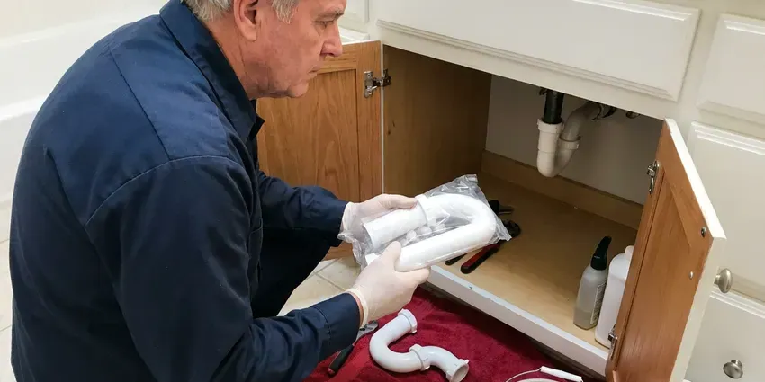

Toilet Repair in Nashville, TN
A toilet that runs, rocks or leaks at the base in Nashville, TN rarely fixes itself. BGV Plumbing finds the failed part and replaces it on the first visit.
- Flappers and Seals Stocked
- Fill Valves on the Truck
- Insured Plumbers
- Live Phone Answering

Toilet Running or Leaking in Nashville, TN?
Tell us what the toilet is doing and we will quote it before we arrive.
Toilet Repair in Nashville, TN
BGV Plumbing fixes toilets across Nashville, TN, from a flapper that will not seal to a wax ring that has been leaking into the subfloor for a year. Every visit includes a check of the fill valve, flapper, flush valve and supply line before we decide what to replace. Nothing gets swapped on a guess. Most repairs wrap up in under an hour.
Our expertise includes:
- Stop phantom refills and constant running
- Rebuild tank-to-bowl seals and bolts
- Clear stubborn clogs with a closet auger

Additional Bathroom Plumbing Services in Nashville, TN
From toilets to showers, our bathroom plumbing team in Nashville, TN repairs, installs, and replaces every fixture with clean, code-compliant work.


Customers
Why Choose BGV Plumbing for Toilet Repair in Nashville, TN?
Diagnosis comes before parts. We dye-test the tank, check the base and watch a full flush cycle before quoting, so the price covers the real problem and not just the symptom you noticed first. That keeps the bill to one visit.
- Matched Parts, Brand-specific flappers seal properly where universal ones leak.
- Local Plumbers, Our plumbers work every day in and around Nashville, TN.
- Parts On Hand, Trucks carry both common flapper sizes plus wax rings.
Citywide Coverage
Every route is planned so a plumber is never too far from a toilet that is actively leaking. That keeps arrival times short. A slow fill valve or a loose seat can wait for a time that works for you, including early morning slots.
Experienced Team
Plumbers on our team explain what failed in plain words and show you the old part, whether it is a warped flapper or a wax ring that has gone flat. You do not need plumbing jargon to follow along. Questions are welcome at any point, and we will tell you which repairs can wait.
Safety-First Approach
Leak checks happen twice, once right after the reset and again after several full flushes, with a dry paper towel pressed around the base and the supply nut. Any damp spot means we redo it. We would rather catch it now than hear about it from the room below.
Trusted Certified Nashville Plumbing Services Professionals
At BGV Plumbing, we take pride in licensed, certified plumbing services throughout Nashville, TN. Credentials matter in this trade. Our plumbers hold recognized industry credentials, and they follow strict safety and quality rules on every repair, installation and maintenance call we run.
Call Us Now PHCC Plumbing Contractor Recognition
PHCC Plumbing Contractor Recognition Better Business Bureau (BBB) Accreditation
Better Business Bureau (BBB) Accreditation Angi Certified Pro
Angi Certified Pro ISO 9001 Quality Management Certification
ISO 9001 Quality Management CertificationEveryday Toilet Repairs in Nashville, TN
Clogged Toilet Solutions in Nashville, TN
Paper towels, wipes, dental floss and toys cause most of the repeat clogs we clear, and none of them break down the way toilet paper does. The closet auger usually hooks them and pulls them out. If the toilet clogs again within a week, the problem is further down the line. Then we look at the branch drain and the main sewer, often with a camera.

Fill Valve Replacement in Nashville
Old ballcock valves with a brass arm and a big plastic float are loud and slow to refill, and they tend to stick open when scale builds up in the ports. We swap them for an adjustable fill valve from Fluidmaster or Korky and set the height so the critical level mark sits at least an inch above the overflow. It is a twenty-minute job. You will notice the difference the first night, because the tank stops hissing.
Leaking Toilet Base Repair in Nashville, TN
A rocking bowl breaks the wax seal a little more every time someone sits down, and eventually the leak shows up as a stain or a soft spot. On slab floors the flange is set in concrete and can crack if the closet bolts are overtightened. We check it. A cracked flange gets a stainless repair ring or a new flange before the toilet goes back down.
Running Toilet Fixes in Nashville
Phantom refills, the tank topping itself off for a few seconds in the middle of the night, almost always mean a slow leak at the flapper. The level falls a little until the fill valve opens back up. Other times the refill tube sits too deep in the overflow pipe, which siphons the tank. We clip it above the water line.
Clogged Toilet Clearing in Nashville, TN
Most clogs sit in the trapway, the curved channel cast into the porcelain, and a closet auger with a rubber-sleeved head clears them without scratching the bowl. Plungers miss some. If the auger comes back clean and the toilet still backs up, the blockage is further down the drain or in the main line. At that point we run a cable from the nearest cleanout or send a camera down to see it.
Commercial Toilet Repair in Nashville
Office and retail restrooms take more flushes in a day than a house sees in a month, so the parts wear faster and fail harder. Most commercial toilets use flushometer valves instead of tanks, and those need diaphragm kits and vacuum breakers from time to time. We carry Sloan and Zurn kits. If downtime is a problem, we can come in before you open or after you lock up.
Pressure-Assist and Dual-Flush Repair in Nashville
Pressure-assist toilets use a sealed vessel inside the china that compresses air with incoming water pressure, and the cartridge inside that vessel eventually wears out. Hardware stores rarely stock those parts. We carry Flushmate cartridges and dual-flush seals for the common TOTO and American Standard models, and we check house pressure, since these units need steady line pressure to flush properly. Low pressure makes them sound weak.

Toilet Gasket and Seal Replacement in Nashville, TN
The rubber parts in a toilet, the flapper, the tank-to-bowl gasket, the bolt washers and the wax ring at the floor, all break down with age and chlorine. They get stiff. Hardened rubber stops sealing and lets water seep out slowly where you will not see it until the floor stains. We replace the whole set of tank seals at once when one is gone.
Toilet Repair Near You in Nashville, TN
Searching for toilet repair near me tends to happen when there is already water on the floor, so the first thing we do is tell you where the shutoff is. Then we schedule. Our trucks stay on local routes in Nashville, TN, which keeps arrival windows short and realistic.
Phone calls get answered by a person who asks what the toilet is doing, whether it is running, rocking, leaking at the base or backing up. Those answers tell the plumber which parts to load. Expect a clear time window. Before the truck leaves, you will already have a rough price range.
BGV Plumbing at a Glance
- Fully licensed plumbing team covering Nashville, TN
- 24/7 emergency service with same-day scheduling
- Upfront, flat-rate pricing before work begins
- 4.9-star rated by 932+ Tennessee customers
Nashville Map
Nashville Information
- Population
- 687,788
- Area codes
- 615/931/629
- Service area
- Nashville and communities within 40 miles
- Nearby
- Hendersonville, Franklin, Smyrna, Gallatin
A wax ring that lets go or a flush valve seat crusted with scale can leak quietly for months before anyone notices in a Nashville home. Private wells serve many rural homes in Tennessee, and some well water carries iron, sulfur or sediment that calls for filtration or treatment. An early call keeps it a parts swap instead of a floor job.
Talk to a Plumber
Call BGV Plumbing for reliable plumbing work done by licensed pros in Nashville, TN.
Our Specialized Plumbing Services in Nashville, TN
At BGV Plumbing, we handle the full list of plumbing services across Nashville, TN. From leak detection to full system installs, our team works fast and charges fair prices on homes and commercial properties alike. Explore our core services below:


What to Expect From a Toilet Repair in Nashville, TN
At BGV Plumbing, every toilet repair in Nashville, TN begins with a test, not a guess.
Call or Book Online
Call (615) 518-0893 or use the online form. Describe what the toilet is doing and we set a time window.
Test and Diagnose
The plumber dye-tests the tank and checks the base before naming a cause.
Flat Price
You get a flat price for the repair and approve it before work starts.
Frequently Asked Questions About Toilet Repair in Nashville
Flapper or fill valve repairs usually run $100 to $250 with parts and labor, while a wax ring reset lands closer to $200 to $400 depending on the flange. Clearing a clog with a closet auger is often $150 to $350. You get the exact number after we diagnose it. Nothing gets added to that number unless you sign off on extra work.
Not for typical repairs like new tank parts or a fresh seal. Adding a toilet where there was none or changing the drain line is different, and permit rules depend on the local building department in Nashville. We look up what applies to your address before we start.
Calcium and magnesium in hard water crust onto the flush valve seat, the fill valve ports and the rim jets under the bowl lip. The result is slow refills, weak flushes and leaks over time. Descaling helps. Parts with fewer small ports also hold up better in hard water.
Yes. Our labor is guaranteed, and the parts we install carry the manufacturer warranty, which varies by brand. Should the same leak or run come back during that period, we come back and make it right at no charge.
You can, as long as you match the size, 2 inch or 3 inch, and the flush valve seat underneath is smooth. Shut the water off at the angle stop and flush the tank empty first. Base leaks and flange repairs are a different matter, because a bad reset can rot the subfloor before you notice.
Usually, if the china is intact and it flushes cleanly. An older model that takes 3.5 gallons or more per flush is a different case, since a 1.28 gallon WaterSense toilet can pay for itself in water savings over time, especially in a busy household. A cracked tank pushes the answer toward a new toilet.
Some are. A flapper swap or a chain adjustment is fine for most homeowners, but base leaks, cracked flanges and anything involving the drain are where a mistake turns into hidden water damage under the floor. A toilet reset that is slightly off can leak into the subfloor for months.
Repair makes sense when the porcelain is sound and the toilet flushes well with new parts. A cracked bowl or tank usually points to replacement, a toilet that clogs every week no matter what we do, or an old 3.5 gallon model that wastes water on every flush. We give you both prices.
What People Are Saying About Our Plumbing Experts?

Carlos V.
Our house still had galvanized pipe, and upstairs the shower was a trickle. The crew repiped everything in PEX over three days and patched every drywall hole before they left. The pressure difference is night and day.
Repiping · Smyrna, TN
Greg S.
I manage a small strip center with six tenants. BGV Plumbing handles our annual backflow testing and fixed a recurring clog in the shared sewer line that had been backing into the nail salon. Their reports come in clean and on time.
Commercial Plumbing · Spring Hill, TN
Sofia M.
Two new toilets went in during one visit. The tech set them on new wax rings and swapped the old supply lines. He also noticed our bathroom faucet dripping and replaced the cartridge while he was there. No mess left behind.
Toilet Installation · Spring Hill, TN
Diane F.
My kitchen faucet had dripped for months and I finally got tired of hearing it at night. BGV Plumbing came out the next morning, replaced the cartridge and the O rings, and tightened a loose base that was letting water under the sink.
Faucet Repair · Franklin, TNJessica T.
We were adding a gas range in a kitchen remodel and needed a new line run from the meter. The plumber pulled the permit, ran the pipe through the crawl space, and had it inspected and approved within the week.
Gas Line Repair · Smyrna, TNLaura S.
Our 40 gallon tank started leaking from the bottom after thirteen years. The tech hauled the old one out, set a new unit with a fresh expansion tank, and had hot water running in about four hours. He took the old tank with him too.
Water Heater Replacement · Spring Hill, TN